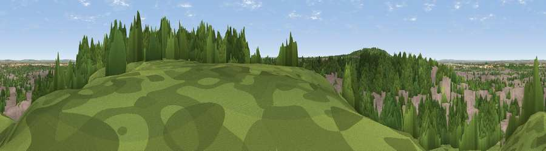

Viewpoint near Woolwich
#31843 in England · top 33% of its area beats it · near WoolwichThe view, rendered

A 360° render of this exact spot computed from the terrain model, tree cover and land cover — summer colours, afternoon light, calibrated against photographs of famous viewpoints. Real trees, hedges and buildings will differ in detail.
The panorama
Grey silhouette: terrain skyline in each direction (720 bearings, Earth curvature and refraction included). Dashed green: skyline with trees (+15 m) and buildings (+8 m) as obstacles. Blue strip: how far the ground is visible on each bearing.
Where the view opens
Wedge length = distance to the farthest visible ground on that bearing (vegetation-aware). Rings at 10, 25 and 50 km.
What fills the view
49% woodland · 43% built-up · 7% grassland ·
Angular shares of the visible panorama (visual magnitude), not map area. Landscape diversity 0.42 (0–1 Shannon).
Key numbers
More beautiful places nearby
The staircase of upgrades: each row has a higher view potential than everything closer. Driving times are estimates from straight-line distance, calibrated against real road routing — check an actual route before setting out.
| Place | Direction | Drive | Score |
|---|---|---|---|
| Viewpoint near Woolwich | WSW · 3 km | ~6 min | 48.8 |
| Shooters Hill | WSW · 3 km | ~7 min | 50.4 |
| Viewpoint near Eltham | WSW · 4 km | ~9 min | 52.2 |
| Viewpoint near Erith | ENE · 6 km | ~13 min | 54.3 |
| Viewpoint near Ebbsfleet Valley | ESE · 15 km | ~26 min | 56.1 |
| Betsom's Hill | S · 22 km | ~36 min | 57.9 |
| Viewpoint near Wrotham | SE · 22 km | ~37 min | 65.1 |
| Viewpoint near Wrotham | SE · 24 km | ~39 min | 66.6 |
51.48223, 0.10732 · source: screening · position refined by local search. Computed location — check access rights before visiting.